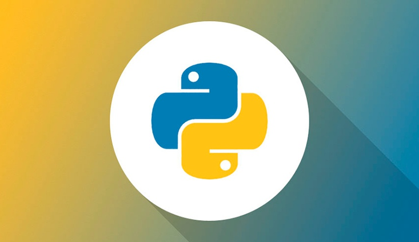

Lenguajes De Programación
Esta es mi primera página web, vamos a hablar sobre algunos de los lenguajes de programación mas
utilizados en la actualidad.
Además encontrarán una tabla de ejemplo que se creó jugando con algunos conceptos de HTML, un formulario
creado con JavaScript y un vídeo incrustrado de Youtube.
- Go
- Go es un desarrollo de Google inspirado en C y Algol que apareció en 2009, y que además de usarse en
varios de los sistemas de producción de Google, está abierto a que cualquiera juegue con el.

- C
- C lleva la friolera de 44 años con nosotros, y se ha convertido a la fuerza en uno de los lenguajes de
programación más utilizados de todos los tiempos, influyendo a decenas de lenguajes posteriores.

- C Sharp (C#)
- C# es una de los lenguajes influenciados por C, y fue desarrollado por Microsoft hace 16 años buscando
arreglar los fallos del resto de lenguajes.

- CSS
- CSS no es un lenguaje de programación como tal, sino que se trata de un lenguaje usado para determinar
cómo se muestra un documento escrito en un lenguaje de marcado. Es conocido por ser una de las piedras
angulares de la web, junto al HTML y JavaScript.

- C++
- Volvemos 33 años atrás en el tiempo con C++, un lenguaje hecho para escribir sistemas enormes. Los
sistemas operativos que utilizamos, todos los juegos de Blizzard, Unreal Engine, Unity, la mayoría de
programas de productividad…

- PHP
- es un lenguaje de programación de propósito general de código del lado del servidor originalmente
diseñado para el preprocesado de texto plano en UTF-8. Posteriormente se aplicó al desarrollo web de
contenido dinámico, dando un paso evolutivo en el concepto de aplicación en línea, por su carácter de
servicio.

- Ruby
- Ruby, que no confundir con Ruby on Rails, tiene 21 años a sus espaldas y se ha ganado a muchos
programadores gracias a la sencillez que lo caracteriza.
- Python
- Python, un lenguaje que hizo su primera aparición en 1991, es un lenguaje fácil de leer, y es uno de los
más recomendados para empezar en la programación.

- Java
- Java es un lenguaje de programación y una plataforma informática que fue comercializada por primera vez
en 1995 por Sun Microsystems. Hay muchas aplicaciones y sitios web que,probablemente, no funcionarán a menos
que tenga Java instalado y cada día se crean más. Java es rápido, seguro y fiable. Desde portátiles hasta
centros de datos, desde consolas para juegos hasta super computadoras, desde teléfonos móviles hasta
Internet, Java está en todas partes, que es ejecutado en una plataforma no tiene que ser recompilado para
correr en otra. Java es, a partir de 2012, uno de los lenguajes de programación más populares en uso,
particularmente para aplicaciones de cliente-servidor de web, con unos diez millones de usuarios reportados.

- JavaScript
- El honor de ser el ‘lenguaje de programación’ más utilizado le corresponde a un lenguaje que no podemos
compilar, JavaScript. Lleva desde 1995 con nosotros (lo mismo que Java, aunque no tengan nada que ver), y
sólo tenemos que escribir el código y adjuntarlo al HTML.
Se utiliza principalmente en su forma del lado del cliente (client-side), implementado como parte de un
navegador web permitiendo mejoras en la interfaz de usuario y páginas web dinámicas y JavaScript del lado
del servidor (Server-side JavaScript o SSJS). Su uso en aplicaciones externas a la web, por ejemplo en
documentos PDF, aplicaciones de escritorio (mayoritariamente widgets) es también significativo.